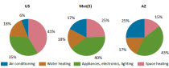

Residential Energy Consumption Survey (RECS)
2001 RECS Survey Data 2009 | 2005 | 2001 | 1997 | 1993 | Previous
Jump Menu
Public Use Microdata Files
WHAT IS RECS?
The Residential Energy Consumption Survey (RECS) is a national sample survey of housing units. The survey collects statistical information on the consumption of and expenditures for energy in housing units along with data on energy-related characteristics of the housing units and occupants. The survey is restricted to housing units that are the primary residence of the occupants; the RECS does not cover vacant housing units, second homes, or vacation units. RECS is conducted by the Energy Information Administration of the U.S. Department of Energy. The RECS was conducted in 1978, 1979, 1980, 1981, 1982, 1984, 1987, 2001, 1993, 1997, and 2001. For the 2001 RECS, data were obtained for 4,822 housing units. Energy-related characteristics of the housing units and occupants are obtained in an on-site personal interview with the occupants. Energy consumption and expenditures information are obtained from the energy suppliers to the responding households during the Energy Suppliers Survey that follows the household personal interview.
LINKS TO EACH DATA FILE AND SUPPORTING DOCUMENTATION
For each data file, a codebook is provided (both files are in ASCII format). For files based upon the Household Questionnaire, the corresponding section of the questionnaire is provided
Note: To Download one of the Text or PDF files below, click on the file of your choice to open it, then select FILE and SAVE AS, save file to your hard drive or a disk.
| by Topic | Data Files | Spreadsheets | Codebook | Questionnaire | Release Date |
|---|---|---|---|---|---|
| File 1: Housing Unit Characteristics | TXT | TXT | 05-11-2004 | ||
| File 2: Kitchen Appliances | TXT | TXT | 05-13-2004 | ||
| File 3: Other Appliances | TXT | TXT | 06-03-2004 | ||
| File 4: Space Heating | TXT | TXT | 06-17-2004 | ||
| File 5: Water Heating, Air Conditioning, Lights, Doors, Windows, and Insulation | TXT | TXT | 07-21-2004 | ||
| File 6: Fuels Used and Fuels Payment Method | TXT | TXT | 08-02-2004 | ||
| File 7: Fuel Bill and Nonresidential Uses on Bill | TXT | TXT | 08-02-2004 | ||
| File 8: Household Characteristics | TXT | TXT | 08-24-2004 | ||
| File 9: Energy Assistance and Housing Unit Measurements | TXT | TXT | 08-30-2004 | ||
| File 10: Characteristics of Energy Supplier Data | TXT | TXT | 10-07-2004 | ||
| File 11: Energy Consumption | TXT | TXT | 11-08-2004 | ||
| File 12: Energy Expenditures | TXT | TXT | 11-08-2004 |
WHAT ARE THE RECS PUBLIC USE FILES?
The 2001 RECS Public Use Files are microdata files that contain 4,822 records, representing housing units from the 50 States and the Districtof Columbia. Each record corresponds to a single responding, in-scopesampled housing unit and contains information for that unit about thesize, year constructed, types of energy used, energy-using equipment, conservation features, energy consumption andexpenditures (electricity, natural gas, fuel oil, kerosene, and LPG),and the amount of energy used for five end uses: space heating,air-conditioning, water heating, refrigeration, and other.
WHAT IS THE GEOGRAPHIC LEVEL OF DATA AVAILABLE?
RECS data are available for the four Census regions and nine Census divisions. State-level data are available for the four most populated States (California, Texas New York, and Florida).WHAT IS THE FORMAT OF THE PUBLIC USE FILES?
The Public Use Files are constructed in two formats -- ASCII and Microsoft ACCESS. Both formats contain the same detail of information, with the notable exception that the ACCESS database has replaced all alphanumeric coding with English labeling. In ASCII files all records are comma-delimited with fixed column positions. The creation of comma-delimited ASCII files enables use of EIA's public-use files by a wide spectrum of data users. However, EIA realizes that some users are well versed in the use and manipulation of common database systems. Unfortunately, EIA does not have the resources to provide public-use files in multiple database formats. However, EIA has created an ACCESS version of the 2001 RECS because of the internal use of the Microsoft ACCESS software. The continuation of multiple format releases is highly dependent upon the use and feedback from our data users. The ACCESS will be available at a later time.
HOW ARE THE PUBLIC USE FILES ORGANIZED?
Because of the size of the RECS database, the variables were grouped into 12 files by section of Household Questionnaire:
- Section A: Housing Unit Characteristics
- Section B: Kitchen Appliances
- Section C: Other Appliances
- Section D: Space heating
- Section E: Water heating, Section F: Air conditioning, Section G: lights, doors, windows, and insulation
- Section H: Fuels Used and Fuels Payment Method
- Section I: Fuel Bill and Non-Residential Uses on Bill
- Section J: Household Characteristics
- Section K: Energy Assistance, Section M: Housing unit Square Footage
- Characteristic of Energy Supplier Data
- Energy Consumption
- Energy Expenditures
VARIABLES ON EVERY FILE
Several variables are frequently used in the analysis of residential energy data. These include the type of housing unit, the geographic location of the unit, and weather data for the location of the unit. The nine variables on all 12 files are:
- DOEID (unique housing unit identifier)
- NWEIGHT (household weight)
- MQRESULT (mail questionnaire identifier)
- TYPEHUQ (type of housing unit)
- REGIONC (Census region)
- DIVISION (Census division)
- LRGSTATE (indicator for California, Texas, New York, and Florida)
- HDD65 (heating degree-days to 65 degrees for 2001)
- CDD65 (cooling degree-days to 65 degrees for 2001)
HOW TO MERGE FILES
Each of these 12 files can be used by itself or be merged with other files. By merging files together, a new file can be created that contains, for each respondent, variables from two or more files. The variable DOEID can be used to link the files.
HOW TO USE WEIGHTS
The RECS sample was designed so that survey responses could be used to estimate characteristics of the national stock of occupied housing units. In order to arrive at national estimates from the RECS sample, base sampling weights for each housing unit, which were the reciprocal of the probability of that building being selected into the sample, were calculated. Therefore, a housing unit with a base weight of 10,000 represents itself and 9,999 similar, but unsampled housing units in the total stock of occupied residential housing units. The base weight is further adjusted to account for nonresponse bias. Finally, ratio adjustments were used to ensure that the RECS weights add up to Current Population Survey estimates of the number of households. The variable NWEIGHT in the data file is the final weight.
- EXAMPLE 1: Single Response
- The respondent with DOEID = 2241 has NWEIGHT = 16,347. Hence this respondent represents a total of 16,347 households. The respondent used 639 gallons (GALLONFO = 639) of fuel oil. Hence, the respondent contributed 639 times 16,347 = 10,400,000 gallons to the estimated national total fuel oil consumption.
- EXAMPLE 2: Using NWEIGHT to estimate number of households
- There were 509, out of the 4,822 RECS respondents, that used fuel oil in their homes (USEFO = 1). Most, but not all, of these households use fuel oil for space heating. The sum of NWEIGHT over these 509 cases is 8,661,036. Hence, the estimated number of households that use fuel oil is 8,700,000.
- EXAMPLE 3: Using NWEIGHT to estimate percentage of households
- The sum of NWEIGHT over all 4,822 cases is 106,989,274. This is also an estimate of the total number of households as of July 2001. Hence, the estimated percent of households that use fuel oil (for any use in the home) is (8,661,036/106,989,274) times 100 equals 8.1 percent.
- EXAMPLE 4: Using NWEIGHT to estimage total consumption
- To estimate the total fuel oil consumption, multiply NWEIGHT times GALLONFO for the 509 cases where fuel oil is used in the home (USEFO = 1), then sum the product over the cases where USEFO = 1. The resulting estimate is 5,105,234,317 gallons. This should be rounded to 5.1 billion gallons.
- EXAMPLE 5: Using NWEIGHT to estimage average consumption
- The sum of NWEIGHT over cases where USEFO =1 is 8,661,036. Hence the estimated average fuel oil consumption, in homes that use fuel oil, is 5,105,234,317/8,661,036 = 589 gallons.
MAIL RESPONSES
If the field interviewers were not successful in obtaining a personal interview, a short mail questionnaire was mailed to the housing unit. Variables not on the mail questionnaire were then imputed for the housing unit using a hot deck procedure. There were 167 observations obtained via a mail questionnaire. These 167 records correspond to the cases were the variable MQRESULT equals 1 or 2.
FUEL USAGE INDICATORS
The variables USEEL, USEFO, USEKERO, USELP, and USENG are indicator variables for the use electricity, fuel oil, kerosene, LPG, and natural gas in the housing unit. They are on three files. They were obtained using section H of the questionnaire and they are indicator variables that equal 1 if the households uses the corresponding fuel and 0 otherwise. In addition to being placed on the file with other section H data, they were also placed on the consumption data file and the expenditures data file.
HOW ARE THE VARIABLES THAT BEGIN WITH A Z DIFFERENT FROM THE NON-Z VARIABLES?
The "Z variables" are also referred to as "imputation flags." Imputation is a statistical procedure used to fill in missing values for respondents that are otherwise considered to be complete. Missing values for many, but not all, of the variables were imputed in 2001. The imputation flag indicates whether the corresponding non-Z variable was based upon reported data (Z variable = 0) or was imputed (Z variable = 1 or 2). There are no corresponding "Z variables" for variables from the RECS questionnaire that were not imputed, variables where there was no missing data, and variables that are not from the questionnaire. The missing data codes for the consumption and expenditure data are contained in the "Characteristics of Energy Supplier Data" file.
HOW IS THE SURVEY RESPONDENT'S CONFIDENTIALITY PROTECTED?
There are no respondent names and address on these files. EIA does not receive nor take possession of the names or addresses of individual respondents. Local geographic identifiers and National Oceanic and Atmospheric Administration Weather Division identifiers are not included in the public use data files.
In addition, values for HDD65, CDD65, were altered slightly to mask the exact geographic location of the housing unit.
Specific questions on this product may be directed to:
Chip Berry
James.Berry@eia.gov
RECS Survey Manager
Phone: (202) 586-5543
Fax: (202) 586-0018
Has your home been selected for the RECS?
State fact sheets
2009 RECS Features
Heating and cooling no longer majority of U.S. home energy use
March 7, 2013
Newer U.S. homes are 30% larger but consume about as much energy as older homes
February 12, 2013
Where does RECS square footage data come from?
July 11, 2012
RECS data show decreased energy consumption per household
June 6, 2012
The impact of increasing home size on energy demand
April 19, 2012
Did you know that air conditioning is in nearly 100 million U.S. homes?
August 19, 2011

Winter residential electricity consumption expected to increase from last winter
December 12, 2016
Thanksgiving holiday causes unique electricity usage patterns across the country
December 5, 2016
Residential heating oil and propane prices at levels similar to last winter’s low prices
November 17, 2016